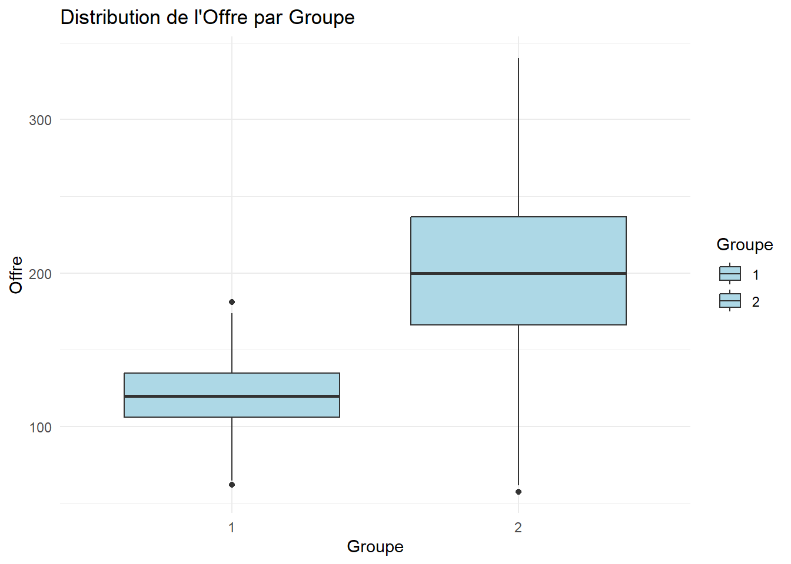
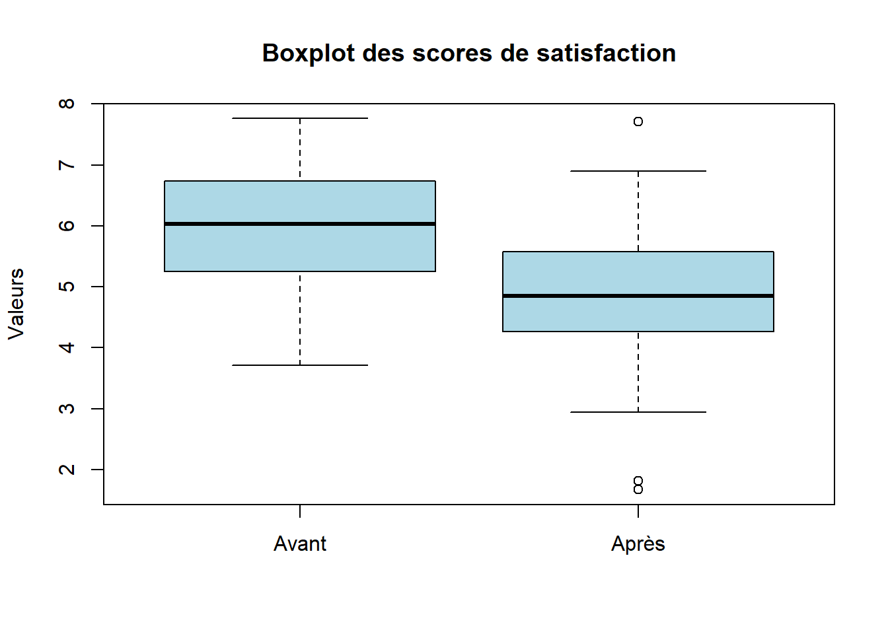

# Charger les données CSV
offre <- read.csv("C:/Users/Fatou/OneDrive - HEC Montréal/PROJET SUPERVISE/THEME 2/Livrable_Theme2/data/Offre_Finebouche.csv",
sep=";", header=TRUE)
# Convertir Groupe en variable catégorielle
offre$Groupe <- as.factor(offre$Groupe)
# Remplacer les virgules par des points dans Offre
offre$Offre <- gsub(",", ".", offre$Offre)
# Convertir Offre en numérique
offre$Offre <- as.numeric(offre$Offre)Thème 2:Comparaison de deux groupes
1 Comparaison de deux groupes échantillons indépendants
1.1 Comparaison de 2 moyennes (échantillons indépendants)
Mise en situation 1
La chaîne de supermarchés « Finebouche », chef de file de l’alimentation au détail, s’engage à offrir à ses clients une expérience unique de magasinage. Les hauts dirigeants de la chaîne ne s’entendent pas sur la politique de gestion des plaintes des clients. Certains prétendent qu’une compensation monétaire sous forme d’un coupon de 20 $ devrait être envoyée par la poste aux clients non satisfaits et d’autres pensent qu’un message de courtoisie personnalisé serait suffisant pour rétablir la confiance des clients insatisfaits.
Les analystes de la chaîne ont décidé d’analyser l’effet de ces deux politiques afin de parvenir à une recommandation. Deux échantillons aléatoires simples de 500 clients chacun ont été tirés. Une compensation monétaire a été accordée au premier échantillon et une lettre de courtoisie a été envoyée au deuxième échantillon.
Données
Le fichier de données « offre_finebouche.csv » contient des données propres à cette mise en situation. Il contient 1000 observations et deux variables:
Offre: montant des dépenses par visite un mois après la mise en œuvre des deux politiques.
Groupe: 1 - clients ayant reçu le coupon de 20$; 2 - clients ayant reçu la lettre de courtoisie.
Exercice 1:
1-Représentez la distribution du montant des dépenses par visite pour chaque groupe.
2-Commentez le résultat dans le contexte du problème.
3-Existe-t-il une différence significative entre les dépenses moyennes par visite chez les deux groupes?
4-Quantifiez la grandeur de la différence entre les deux moyennes.
5-Quelle politique vous semble la plus appropriée dans ce contexte?
Boxplot:
# Charger le package ggplot2
library(ggplot2)
# Créer un boxplot Offre en fonction des Groupes
ggplot(offre, aes(x = Groupe, y = Offre, fill = Groupe)) +
geom_boxplot() +
labs(y = "Offre", x = "Groupe", title = "Distribution de l'Offre par Groupe") +
scale_fill_manual(values = c("lightblue", "lightblue")) +
theme_minimal()
Indicateurs:
# Charger le package dplyr
library(dplyr)
# Calculer les statistiques descriptives de la variable offre pour chaque groupe
Stat_desc<- offre %>%
group_by(Groupe) %>%
summarise(
Effectif = n(),
Moyenne = mean(Offre, na.rm = TRUE),
Médiane= median(Offre,na.rm = TRUE),
Minimum= min(Offre, na.rm = TRUE),
Maximum= max(Offre, na.rm = TRUE),
Ecart_Type = sd(Offre, na.rm = TRUE),
)
#Afficher le résultat
print(Stat_desc)# A tibble: 2 × 7
Groupe Effectif Moyenne Médiane Minimum Maximum Ecart_Type
<fct> <int> <dbl> <dbl> <dbl> <dbl> <dbl>
1 1 500 120. 120. 62.1 181. 20.7
2 2 500 200. 200. 57.8 340. 49.51.2 Cadre théorique: Comparaison de 2 moyennes (échantillons indépendants)

1.3 Test-T (Student) et intervalle de confiance
Pour comparer deux moyennes de deux échantillons indépendants, on utilise habituellement le Test-T. Mais il existe deux versions du T-Test:
Version 1: les variances des populations sont supposées égales. Version 2: les variances des populations sont quelconques.
Conditions d’utilisation :
Test-T est conçu initialement pour des variables quantitatives.
Les 2 échantillons doivent être prélevés de manière indépendante.
Si les échantillons sont « petits », les distributions des variables Y1 et Y2 dans les populations de référence doivent s’approcher d’une loi Normale.
Si les échantillons sont assez grands, le test demeure valide même si les variables ne sont pas normalement distribuées dans les populations de référence. Dans la plupart des cas, des échantillons de 30 observations et plus sont suffisants. En fait, plus les distributions initiales sont asymétriques, plus les tailles des échantillons devront être grandes.
1.3.1 \[ \text{ Version 2: Variances des populations }\quad\sigma_1^2 \text{ et } \sigma_2^2 \text{ supposées égales} \]
Statistique du test :
\[ T = \frac{\overline{Y}_1 - \overline{Y}_2} {\sqrt{\frac{(n_1 - 1) S_1^2 + (n_2 - 1) S_2^2}{n_1 + n_2 - 2} \times \left( \frac{1}{n_1} + \frac{1}{n_2} \right) }} \]
Intervalle de confiance pour estimer ( μ₁ et μ₂)
\[ \overline{Y}_1 - \overline{Y}_2 \pm t_{\alpha/2} \sqrt{\frac{(n_1 - 1) S_1^2 + (n_2 - 1) S_2^2}{n_1 + n_2 - 2} \times \left( \frac{1}{n_1} + \frac{1}{n_2} \right)} \]
Nombre de degrés de liberté :
\[ n_1 + n_2 - 2 \]
Cette version du test est « puissante » en autant que les variances des 2 populations sont égales.
Il faut donc effectuer un test préalable sur les variances des populations (Test de Levene) pour voir si on peut se permettre de supposer leur égalité avant de tester les moyennes. En cas de doute, la version 2 (variances quelconques) du test est préférable.
1.3.2 \[ \text{ Version 2: Variances des populations }\quad\sigma_1^2 \text{ et } \sigma_2^2 \text{ quelconques} \]
Statistiques du test:
\[ T = \frac{\overline{Y}_1 - \overline{Y}_2} {\sqrt{\frac{S_1^2}{n_1} + \frac{S_2^2}{n_2}}} \text{(Si H0 est vraie, distribution T=student)} \]
Intervalle de confiance pour estimer μ₁ - μ₂:
\[ \overline{Y}_1 - \overline{Y}_2 \pm t_{\alpha/2} \sqrt{\frac{S_1^2}{n_1} + \frac{S_2^2}{n_2}} \]
Pour cette version du test et de l’intervalle, le nombre de degrés de liberté associés à la Student est approximativement égal à :
\[ \frac{(w_1 + w_2)^2}{\frac{w_1^2}{(n_1 - 1)} + \frac{w_2^2}{(n_2 - 1)}}\text { avec } \ w_i = \frac{S_i^2}{n_i}\text{ approximation de Satterthwaite} \]
A fin de comparer les dépenses moyennes des deux groupes, on commence par tester l’égalité des variances dans les populations considérées pour ensuite choisir le Test-T approprié.
Étape 1: tester l’égalité des variances (Test de Levene):
\[ H_0: \sigma_1^2 = \sigma_2^2 \quad \text{vs} \quad H_1: \sigma_1^2 \neq \sigma_2^2 \]
Étape 2: tester l’égalité des moyennes:
\[ H_0: \mu_1 = \mu_2 \quad \text{vs} \quad H_1: \mu_1 \neq \mu_2 \]
1.3.3 Réponses 3,4 et 5
# Charger le package car
library(car)
#Test Levene d'égalité des variances
leveneTest(Offre ~ Groupe, data = offre)Levene's Test for Homogeneity of Variance (center = median)
Df F value Pr(>F)
group 1 257.81 < 2.2e-16 ***
998
---
Signif. codes: 0 '***' 0.001 '**' 0.01 '*' 0.05 '.' 0.1 ' ' 1#Test d’égalité des moyennes: cas où les variances ne sont pas égales
t.test(Offre ~ Groupe, data = offre, var.equal = FALSE)
Welch Two Sample t-test
data: Offre by Groupe
t = -33.39, df = 668.1, p-value < 2.2e-16
alternative hypothesis: true difference in means between group 1 and group 2 is not equal to 0
95 percent confidence interval:
-84.86323 -75.43678
sample estimates:
mean in group 1 mean in group 2
120.1528 200.3028 # Calculer les statistiques descriptives pour chaque groupe
Stat_desc_groupe <- offre %>%
group_by(Groupe) %>%
summarise(
Effectif = n(),
Moyenne = mean(Offre, na.rm = TRUE),
Ecart_Type = sd(Offre, na.rm = TRUE),
Erreur_Standard = sd(Offre, na.rm = TRUE) / sqrt(n()) # Erreur standard
)
# Afficher le résultat
print(Stat_desc_groupe)# A tibble: 2 × 5
Groupe Effectif Moyenne Ecart_Type Erreur_Standard
<fct> <int> <dbl> <dbl> <dbl>
1 1 500 120. 20.7 0.925
2 2 500 200. 49.5 2.21 1.4 Remarques sur le test-T et IC
R fournit la valeur-p du test bidirectionnels et unidirectionnels, selon l’argument alternative dans la commande t.test(). two.sided pour un test bidirectionnel et one.sided pour un test unidirectionnel.
Lien entre intervalle de confiance et test bidirectionnel (valeur-p):
Test unidirectionnel
Dans R, il est possible d’effectuer un test unidirectionnel en utilisant l’argument alternative dans t.test() :
-t.test(x, y, alternative = “greater”) pour tester H₁ : μ₁ > μ₂.
-t.test(x, y, alternative = “less”) pour tester H₁ : μ₁ < μ₂.
Faiblesse du test-T: sensible aux valeurs très extrêmes.
Exercice: Changez la valeur de la première ligne du fichier à 20000$ et interprétez le résultat trouvé.
# Créer une copie du dataframe offre et l'appeler offre2
offre2 <- offre
# Changez la valeur de la première ligne du fichier à 20000$ dans la copie offre2
offre2[1, "Offre"] <- 20000
# Vérifier la modification dans offre2
head(offre2) Offre Groupe
1 20000.00000 1
2 109.76692 1
3 89.26780 1
4 93.55777 1
5 112.09800 1
6 126.47238 1# Calculer les statistiques descriptives de la variable offre pour chaque groupe dans Offre2
Stat_desc_groupe2 <- offre2 %>%
group_by(Groupe) %>%
summarise(
Effectif = n(),
Moyenne = mean(Offre, na.rm = TRUE),
Ecart_Type = sd(Offre, na.rm = TRUE),
Erreur_Standard = sd(Offre, na.rm = TRUE) / sqrt(n()) # Erreur standard
)
# Afficher le résultat
print(Stat_desc_groupe2)# A tibble: 2 × 5
Groupe Effectif Moyenne Ecart_Type Erreur_Standard
<fct> <int> <dbl> <dbl> <dbl>
1 1 500 160. 889. 39.8
2 2 500 200. 49.5 2.21leveneTest(Offre ~ Groupe, data = offre2)Levene's Test for Homogeneity of Variance (center = median)
Df F value Pr(>F)
group 1 0.1764 0.6746
998 t.test(Offre ~ Groupe, data = offre2, var.equal = TRUE)
Two Sample t-test
data: Offre by Groupe
t = -1.0127, df = 998, p-value = 0.3114
alternative hypothesis: true difference in means between group 1 and group 2 is not equal to 0
95 percent confidence interval:
-118.50214 37.82582
sample estimates:
mean in group 1 mean in group 2
159.9647 200.3028 1.5 Alternative au Test-T
Test Mann-Whitney-Wilcoxon (MWW)
Test « non-paramétrique » : Pas de condition relative à la distribution dans les populations de référence.
Les variables doivent être au moins ordinales.
Hypothèses réelles testées (légèrement différentes du test-T)
\[
H_0 : P(Y_1 \leq Y_2) = P(Y_1 > Y_2) = \frac{1}{2}
\]
(il y a autant de chance que la variable prenne une valeur plus grande ou plus petite dans une population que dans l’autre)
\[
H_1 : P(Y_1 < Y_2) \neq P(Y_1 > Y_2)
\]
(la variable a tendance à prendre des valeurs plus élevées dans une population que dans l’autre)
La statistique du test MWW est basée sur le rang des observations.
Éch1 :
\[ n_1\text{ (taille échantillon) } \] \[ Y_{11}, Y_{12}, \dots, Y_{1n1}\text{ (observations)} \]
Éch2 :
\[ n_2 \text{ (taille échantillon)} \] \[ Y_{21}, Y_{22}, \dots, Y_{2n2}\text{ (observations)} \]
La statistique du test MWW est basée sur le rang des observations.
Exemples :
\[ \text{ Observations: } 1.2 \quad ; \quad -2.5 \quad ; \quad 0.8 \quad ; \quad 5 \quad ; \quad 3.4 \]
\[ \text{ Rangs: }3 \quad ; \quad 1 \quad ; \quad 2 \quad ; \quad 5 \quad ; \quad 4 \]
——————————————————————————————————————–
\[ \text{ Présence d'ex-aequo: } 1.2 \quad ; \quad -2.5 \quad ; \quad 1.2 \quad ; \quad 0.8 \quad ; \quad 5 \quad ; \quad 3.4 \]
\[ \text{ Rangs: } 3 \quad ; \quad 1 \quad ; \quad 3 \quad ; \quad 2 \quad ; \quad 6 \quad ; \quad 5 \]
\[ \text{Soit } R_{11}, R_{12}, \dots, R_{1n1} \text{ les rangs respectifs des observations } Y_{11}, Y_{12}, \dots, Y_{1n1} \text{ du premier échantillon par rapport aux deux échantillons combinés.} \]
Exemples :
\[ \text{éch1: } 1.2 \quad ; \quad -2.5 \quad ; \quad 0.8 \quad ; \quad 5 \quad ; \quad 3.4 \]
\[ \text{éch2: }-1 \quad ; \quad 1.5 \quad ; \quad 2.5 \quad ; \quad 4.3 \quad ; \quad 6 \quad ; \quad 6.5 \]
Échantillons combinés :
\[ 1.2 \quad ; \quad -2.5 \quad ; \quad 0.8 \quad ; \quad 5 \quad ; \quad 3.4 \quad ; \quad -1 \quad ; \quad 1.5 \quad ; \quad 2.5 \quad ; \quad 4.3 \quad ; \quad 6 \quad ; \quad 6.5 \]
Rangs :
\[ 4 \quad ; \quad 1 \quad ; \quad 3 \quad ; \quad 9 \quad ; \quad 7 \quad ; \quad 2 \quad ; \quad 5 \quad ; \quad 6 \quad ; \quad 8 \quad ; \quad 10 \quad ; \quad 11 \]
La somme des rangs du premier échantillon = 4+1+3+9+7=24
Statistique du test MWW :
\[ W = \sum_{i=1}^{n_1} R_i\text{ (somme des rangs du 1er échnatillon)} \]
\[ \text{ Si H0 est vraie, alors: }\ Z = \frac{W - E(W)}{\sqrt{\text{Var}(W)}}\text{ approximativement de la loi N(0,1)} \]
\[ \text{ lorsqu'il n'y a pas d'ex-aequo:}\ E(W) = \frac{n_1 (n_1 + n_2 + 1)}{2} \text { et } \ \text{Var}(W) = \frac{n_1 n_2 (n_1 + n_2 + 1)}{12} \]
# Test de Mann-Whitney Wilcoxon
wilcox.test(Offre ~ Groupe, data = offre)
Wilcoxon rank sum test with continuity correction
data: Offre by Groupe
W = 16955, p-value < 2.2e-16
alternative hypothesis: true location shift is not equal to 0Ajout d’une valeur extrême
# Test de Mann-Whitney Wilcoxon
wilcox.test(Offre ~ Groupe, data = offre2)
Wilcoxon rank sum test with continuity correction
data: Offre by Groupe
W = 17447, p-value < 2.2e-16
alternative hypothesis: true location shift is not equal to 0La valeur-p est inchangée malgré l’ajout d’une valeur extrême. On obtient la même conclusion!
1.6 Test-T versus MWW
Le test MWW s’utilise peu importe la distribution des variables dans les populations d’origine. Il peut même être appliqué avec des données ordinales (seul le rang des observations est important).
Le test MWW est beaucoup moins sensible à la présence de valeurs extrêmes.
Le test-T est plus puissant que le test MWW lorsque les variables sont normalement distribuées dans les populations de référence. Plus on s’écarte de la loi Normale, plus la puissance du test-T s’amenuise. Dans certaines situations (non normalité et échantillons trop petits, présence de valeurs très extrêmes, etc…), le test MWW pourrait devenir plus puissant que le test-T.
Lorsqu’on a des doutes sur les conditions d’utilisation du test-T, on peut essayer de confirmer (ou infirmer) les résultats avec un test non-paramétrique.

1.7 Comparaison de 2 proportions (échantillons indépendants)
Mise en Situation 2
But de l’étude
Vérifier si l’intérêt envers une application d’achat de linges en ligne diffère selon le sexe.
Méthodologie
Les sujets devaient simplement indiquer s’ils étaient intéressés ou non à utiliser le service.
Échantillons
Les échantillons sont identifiés par la colonne « sexe » : ◦ sexe = 0 : hommes (58 sujets) ◦ sexe = 1 : femmes (42 sujets)
Variable
Une variable binaire indique si l’individu est intéressé à télécharger l’application d’achat en ligne: oui (= 1) ou non (= 0)
#Importer le jeu de donné service_en_ligne
service <- read.csv("C:\\Users\\Fatou\\OneDrive - HEC Montréal\\PROJET SUPERVISE\\THEME 2\\Livrable_Theme2\\data\\service_en_ligne.csv" , sep=";", header=TRUE)
service$interet<- as.factor(service$interet)
service$sexe<- as.factor(service$sexe)1.7.1 Données des deux échantillons
Tableau croisé interet * sexe
# Créer un tableau croisé simple
sexe_interet <- table(service$interet, service$sexe)
# Ajouter les totaux au tableau de comptes
sexe_interet_totaux <- addmargins(sexe_interet)
# Calculer les pourcentages par sexe
pourcentages <- prop.table(table(service$interet, service$sexe), margin = 2) * 100
# Ajouter les totaux aux pourcentages
pourcentages_avec_totaux <- addmargins(pourcentages)
# Combiner les effectifs et les pourcentages
sexe_interet_tableau <- cbind(sexe_interet_totaux, round(pourcentages_avec_totaux, 1))
# Renommer les colonnes
colnames(sexe_interet_tableau) <- c("Hommes", "Femmes", "Compte", "Hommes %", "Femmes %", "Sum %")
# Afficher le tableau final
print(sexe_interet_tableau) Hommes Femmes Compte Hommes % Femmes % Sum %
0 46 25 71 79.3 59.5 138.8
1 12 17 29 20.7 40.5 61.2
Sum 58 42 100 100.0 100.0 200.01.8 Comparaison de 2 proportions (échantillons indépendants)

1.9 Test Z et intervalle de confiance
Statistique du test :
\[ Z = \frac{\hat{\pi}_1 - \hat{\pi}_2} {\sqrt{\hat{\pi} (1 - \hat{\pi}) \left(\frac{1}{n_1} + \frac{1}{n_2} \right)}} \text{ où }\ \hat{\pi} = \frac{n_1 \hat{\pi}_1 + n_2 \hat{\pi}_2}{n_1 + n_2} \]
Si ( H0) est vraie, ( Z ) est approximativement de loi N(0,1)
Intervalle de confiance pour estimer π1 - π2:
\[ (\hat{\pi}_1 - \hat{\pi}_2) \pm Z_{\alpha / 2} \sqrt{\frac{\hat{\pi}_1 (1 - \hat{\pi}_1)}{n_1} + \frac{\hat{\pi}_2 (1 - \hat{\pi}_2)}{n_2}} \]
(remarque : au niveau de confiance 95%, Z α/2 = 1.96 )
Le test Z pour 2 proportions n’est pas directement implémenté dans R, mais il est possible d’obtenir l’équivalent de son résultat en utilisant le test du Chi-square. Ces deux tests sont équivalents et produisent la même valeur-p. En R, on peut utiliser la fonction chisq.test() pour effectuer ce test. Ces deux tests sont équivalents et produisent la même valeur-p. L’intervalle de confiance n’est cependant pas fourni. Il faudra le calculer à la main…
Test Khi-deux de Pearson: la statistique correspond à Z carré
# Appliquer le test du Khi-deux de Pearson
chisq.test(sexe_interet_tableau)
Pearson's Chi-squared test
data: sexe_interet_tableau
X-squared = 14.021, df = 10, p-value = 0.17211.10 Conditions d’utilisation du test Z ou Pearson Chi-Square et de l’IC
Les 2 échantillons doivent être prélevés de manière indépendante dans les populations de référence.
Les échantillons doivent être suffisamment grands.
Pour le test « Pearson Chi-Square », on doit avoir un effectif espéré d’au moins 5 dans chaque cellule du tableau.
Si les échantillons sont petits (effectifs espérés de moins de 5 dans certaines cellules), il est préférable d’utiliser le test exact de Fisher.
2 Comparaison de deux groupes échantillons dépendants
2.1 Comparaison de deux groupes- Échantillons dépendants
Mise en situation 3
Un responsable du service des ressources humaines d’une grande organisation s’inquiète du fort taux de roulement chez les femmes âgés de 30 à 40 ans. Le gestionnaire soupçonne le changement de l’état matrimoniale des femmes dans leurs décisions de quitter la compagnie.
Méthodologie
Le gestionnaire dispose d’un historique des scores de satisfaction (échelle de 1 à 7) au travail mesurés à l’aide de différents items du même questionnaire distribué au personnel à chaque année. Une valeur élevée du score de mobilisation indique une satisfaction plus grande.
Échantillon
43 femmes ayant eu un enfant au cours des 5 dernières années et ayant travaillé au même endroit avant et après leur congé de maternité.
Variables
avant: score de satisfaction avant la grossesse. après: score de satisfaction après le congé de maternité.
# Charger les données depuis un fichier csv
mobilisation <- read.csv("C:/Users/Fatou/OneDrive - HEC Montréal/PROJET SUPERVISE/THEME 2/Livrable_Theme2/data/mobilisation_femmes.csv", sep=";", header=TRUE)
# Remplacement des virgules par des points dans les colonnes avant pendant et apres
mobilisation$avant <- gsub(",", ".", mobilisation$avant)
mobilisation$pendant <- gsub(",", ".", mobilisation$pendant)
mobilisation$apres <- gsub(",", ".", mobilisation$apres)
# Conversion des colonnes en format numérique
mobilisation$avant <- as.numeric(mobilisation$avant)
mobilisation$pendant <- as.numeric(mobilisation$pendant)
mobilisation$apres <- as.numeric(mobilisation$apres)Boxplot:
# Charger ggplot2
library(ggplot2)
# Créer un boxplot pour les variables avant, pendant et après
boxplot(mobilisation$avant, mobilisation$apres,
names = c("Avant", "Après"),
main = "Boxplot des scores de satisfaction",
ylab = "Valeurs",
col = c("lightblue", "lightblue"))
Indicateurs:
# Charger le package dplyr
library(dplyr)
# Calculer les statistiques descriptives pour avant et après
Stat_desc_avant_apres <- mobilisation %>%
reframe(
N = c(length(avant), length(apres)),
Moyenne = c(mean(avant, na.rm = TRUE), mean(apres, na.rm = TRUE)),
Médiane = c(median(avant, na.rm = TRUE), median(apres, na.rm = TRUE)),
Min = c(min(avant, na.rm = TRUE), min(apres, na.rm = TRUE)),
Max = c(max(avant, na.rm = TRUE), max(apres, na.rm = TRUE)),
Ecart_Type = c(sd(avant, na.rm = TRUE), sd(apres, na.rm = TRUE)),
Erreur_Standard = c(sd(avant, na.rm = TRUE) / sqrt(n()), sd(apres, na.rm = TRUE) / sqrt(n()))
) %>%
mutate(Période = c("Avant", "Après")) %>%
select(Période, everything())
# Afficher les résultats
print(Stat_desc_avant_apres) Période N Moyenne Médiane Min Max Ecart_Type Erreur_Standard
1 Avant 43 5.954651 6.03 3.71 7.76 0.9589189 0.1462338
2 Après 43 4.862791 4.85 1.67 7.71 1.2076449 0.18416412.2 Test-T pour échantillon dépendants
\[ Y_{11}, Y_{12}, \dots, Y_{1n} : \text{ observations de } Y_1 \text{ dans le 1}^{\text{er}} \text{ échantillon de taille } n. \]
\[ Y_{21}, Y_{22}, \dots, Y_{2n} : \text{ observations de } Y_2 \text{ dans le 2}^{\text{ème}} \text{ échantillon de taille } n. \]
Le cas le plus fréquent : Les 2 échantillons sont liés aux mêmes individus (données appariées).
Hypothèses du test bidirectionnel :
\[ H_0 : \mu_{\text{avant}} = \mu_{\text{après}} \]
\[ H_1 : \mu_{\text{avant}} \neq \mu_{\text{après}} \]
Puisque les données sont appariées, on peut former une paire d’observations
pour chaque individu et travailler seulement sur les différences :
\[ D_i = Y_{1i} - Y_{2i} \]
C’est comme si on définit directement une nouvelle variable (D) correspondant à la différence :
\[ D_i = Y_{1} - Y_{2} \]
et qu’on teste la moyenne de cette variable : μD = μ1 - μ2
À l’aide de la moyenne des différences observées sur les ( n ) individus :
\[ \overline{D} = \frac{\sum_{i=1}^{n} D_i}{n} \]
Hypothèses :
\[ H_0 : \mu_D = 0 \quad (\mu_1 - \mu_2 = 0) \quad \quad H_1 : \mu_D \neq 0 \quad (\mu_1 - \mu_2 \neq 0) \]
Statistique du test :
\[ T = \frac{\overline{D}}{S_D / \sqrt{n}} \]
SD correspond à l’écart type des différences observées.
Si H0 est vraie, T suit une loi de Student à n-1 degrés de liberté.
Intervalle de confiance :
\[ \overline{D} \pm t_{\alpha/2} \frac{S_D}{\sqrt{n}} \]
R : Utiliser la commande t.test() avec l’argument paired = TRUE
Remarque : Il est également possible de faire un test sur la variable ( D ).
R : Utiliser la commande t.test()
# Test T apparié
t.test(mobilisation$avant, mobilisation$apres, paired = TRUE)
Paired t-test
data: mobilisation$avant and mobilisation$apres
t = 4.6, df = 42, p-value = 3.858e-05
alternative hypothesis: true mean difference is not equal to 0
95 percent confidence interval:
0.6128471 1.5708738
sample estimates:
mean difference
1.09186 2.3 Conditions d’utilisation du Test-T pour données appariées et de l’intervalle de confiance
Si n est « petit », la distribution de la variable D (différence Y1 - Y2) dans la population de référence doit s’approcher d’une loi Normale.
Si n est assez grand, le test demeure valide même si la variable D n’est pas normalement distribuée dans la population de référence.
Tout comme le Test-T pour échantillons indépendants, le Test-T pour données appariées est sensible à la présence de valeurs extrêmes.
Mise en garde! Attention, ici on parle toujours des différences Di et non des variables prises individuellement.
2.4 Test non-paramétriques pour les données appariées
Il existe deux alternatives au Test-T pour données appariées dans le cas de petits échantillons :
1. Le test du signe
2. Le test de Wilcoxon des rangs signés (WRS)
2.4.1 1. Test du signe : Basé sur la différence D=Y1-Y2
Hypothèses :
\[ H_0 : \text{médiane } D = 0 \quad \quad H_1 : \text{médiane } D \neq 0 \]
Statistique du test : S = nombre de différences Di positives (les Di= Y1i - Y2i sont les différences observées)
Si H0 est vraie : S: Binomiale (n, 1/2)
(s’il n’y a pas de différence nulle)
\[ \text{et } Z = \frac{S - E(S)}{\sqrt{\text{Var}(S)}} \text{ approximativement N(0,1)} \]
Remarque : On doit omettre les différences nulles pour calculer S et corriger le ‘’n’’ en conséquence.
\[
\text{lorsqu'il n'y a pas d'ex-aequo, } E(S) = \frac{n}{2} \text{ et } \quad \text{Var}(S) = \frac{n}{4}
\]
Réaliser le test du signe sur R:
Calculer les différences entre les paires de données
Compter le nombre de valeurs positives et négatives
Utiliser la fonction binom.test() pour effectuer un test binomial
# Calculer les différences entre avant et après
differences <- mobilisation$apres - mobilisation$avant
# Afficher les différences
print(differences) [1] 0.19 1.87 -4.67 -1.30 0.02 -0.97 0.19 -2.33 0.08 -1.97 -1.79 -2.45
[13] -0.73 0.77 -1.66 -0.76 -2.99 -0.83 -1.23 1.92 -1.54 -0.45 -0.64 1.10
[25] -1.44 0.79 -1.97 -3.83 0.72 -0.06 0.15 -3.85 -0.27 -1.47 -3.50 -4.27
[37] -0.85 -0.33 -2.56 0.16 -1.55 -0.91 -1.74 # Compter le nombre de différences positives, négatives et nulles
diff_positif <- sum(differences > 0)
diff_negatif <- sum(differences < 0)
diff_nul <- sum(differences == 0)
# Afficher les fréquences
cat("apres < avant :", diff_negatif, "\n")apres < avant : 31 cat("apres > avant :", diff_positif, "\n")apres > avant : 12 cat("apres = avant :", diff_nul, "\n")apres = avant : 0 # Appliquer le test des signes
binom.test(x = diff_positif, n = diff_positif + diff_negatif,
p = 0.5, alternative = "two.sided")
Exact binomial test
data: diff_positif and diff_positif + diff_negatif
number of successes = 12, number of trials = 43, p-value = 0.005402
alternative hypothesis: true probability of success is not equal to 0.5
95 percent confidence interval:
0.1532892 0.4366870
sample estimates:
probability of success
0.2790698 2.4.2 2. Test de Wilcoxon des rangs signés (WRS)
Pour chaque différence observée ( D_i ), on définit :
\[ \varphi_i = \begin{cases} 1 \quad \text{si } D_i > 0 \\ 0 \quad \text{si } D_i < 0 \end{cases} \]
\[ | D_i | : \text{ valeur absolue de la différence } \quad (\text{distance entre la différence et « 0 »}) \]
\[ R_i : \text{ rang de } | D_i | \]
Remarque :
Tout comme pour le test du signe, on doit omettre les différences nulles et corriger ( n ) en conséquence.
De plus, tout comme dans le test MWW, en présence de rangs ex-aequo, on utilise le rang moyen.
Statistique du test :
\[ W^+ = \sum_{i=1}^{n} \varphi_i R_i \]
\[ \text{ Si H0 est vraie: } Z = \frac{W^+ - E(W^+)}{\sqrt{\text{Var}(W^+)}}\text{ approximativement N(0,1)} \]
\[ \text{lorsqu'il n'y a pas d'ex-aequo, } (W^+) = \frac{n(n+1)}{4}, \quad \text{Var}(W) = \frac{n(n+1)(2n+1)}{24} \]
# Effectuer le test de Wilcoxon Signed Rank
wilcox.test(mobilisation$avant, mobilisation$apres, paired = TRUE, alternative = "two.sided")
Wilcoxon signed rank exact test
data: mobilisation$avant and mobilisation$apres
V = 793, p-value = 4.956e-05
alternative hypothesis: true location shift is not equal to 02.5 Comparaison entre Test-T pour données appariées, test du signe et test WRS
Le Test-T pour données appariées est le plus « puissant » des trois tests lorsque la distribution de la différence D s’approche d’une loi Normale. Cette optimalité de la puissance disparaît au fur et à mesure qu’on s’éloigne de la normalité si la taille des échantillons est petite. De plus, il est très sensible aux valeurs extrêmes.
Le test WRS est moins sensible aux valeurs extrêmes et peut aussi bien s’utiliser pour des variables quantitatives que des données ordinales. Dans bien des cas, il pourra être plus puissant que le test t pour données appariées.
Le test du signe peut aussi s’utiliser sur des données quantitatives ou ordinales. Il est le moins puissant des trois tests, sauf en présence de nombreuses valeurs extrêmes.
2.6 Comparaison de 2 proportions (échantillons dépendants)
Mise en situation 4
Vérifier l’impact d’un test de goût sur l’intérêt envers un produit.
Méthodologie
Avant le test de goût, les sujets devaient répondre oui ou non à la question : « Êtes-vous intéressé par l’achat de ce produit ? ». Les mêmes individus devaient répondre à la même question après le test.
Échantillon
200 individus
Variables
Variables binaires indiquant si l’individu est intéressé à acheter le produit avant le test de goût (avant=1 si oui et avant=0 si non) et après le test (après=1 si oui et après=0 si non).
Le fichier « Test_de_goût.csv » contient des données de cet exemple.
#Importer les données
gout <- read.csv("C:/Users/Fatou/OneDrive - HEC Montréal/PROJET SUPERVISE/THEME 2/Livrable_Theme2/data/Test_de_goût.csv", sep=";", header=TRUE)
gout$apres<-as.factor(gout$apres)
gout$avant<-as.factor(gout$avant)2.7 Test du McNemar
Hypothèses du test :
\[ H_0 : \pi_1 = \pi_2 \quad \quad H_1 : \pi_1 \neq \pi_2 \]
Le test est basé sur les effectifs observés dans chaque catégorie.
\[ \begin{array}{c|cc} & 0 & 1 \\ \hline 0 & {n}_{11} & {n}_{12} \\ 1 & {n}_{21} & {n}_{22} \\ \end{array} \]
Statistique du test dans R
\[ Z^2 = \frac{( | n_{12} - n_{21} | - 1 )^2}{n_{12} + n_{21}} \]
Si H0 est vraie et les échantillons assez grands, Z^2 suit approximativement une loi Khi-deux (Chi-Square).
# Créer un tableau de contingence avec avant et après
table_mcnemar <- table(gout$avant, gout$apres)# Charger les bibliothèques nécessaires
library(stats)
# Effectuer le test de McNemar
mcnemar.test(table_mcnemar)
McNemar's Chi-squared test with continuity correction
data: table_mcnemar
McNemar's chi-squared = 6.4533, df = 1, p-value = 0.01107Intervalle de confiance pour estimer π1 - π2 :
\[ (\hat{\pi}_1 - \hat{\pi}_2) \pm Z_{\alpha / 2} \sqrt{\frac{\hat{\pi}_1 (1 - \hat{\pi}_1) + \hat{\pi}_2 (1 - \hat{\pi}_2) - 2 (\hat{\pi}_{11} \hat{\pi}_{22} - \hat{\pi}_{12} \hat{\pi}_{21})}{n}} \]
- Les proportions observées dans chaque cellule sont :
\[ \begin{array}{c|cc} & 0 & 1 \\ \hline 0 & \hat{\pi}_{11} & \hat{\pi}_{12} \\ 1 & \hat{\pi}_{21} & \hat{\pi}_{22} \\ \end{array} \]
- π1 : proportion observée dans le premier groupe et π2: proportion observée dans le deuxième groupe
- Au niveau de confiance 95%
\[ (\hat{\pi}_1 - \hat{\pi}_2) \pm 1.96 \sqrt{\frac{\hat{\pi}_1 (1 - \hat{\pi}_1) + \hat{\pi}_2 (1 - \hat{\pi}_2) - 2 (\hat{\pi}_{11} \hat{\pi}_{22} - \hat{\pi}_{12} \hat{\pi}_{21})}{n}} \]